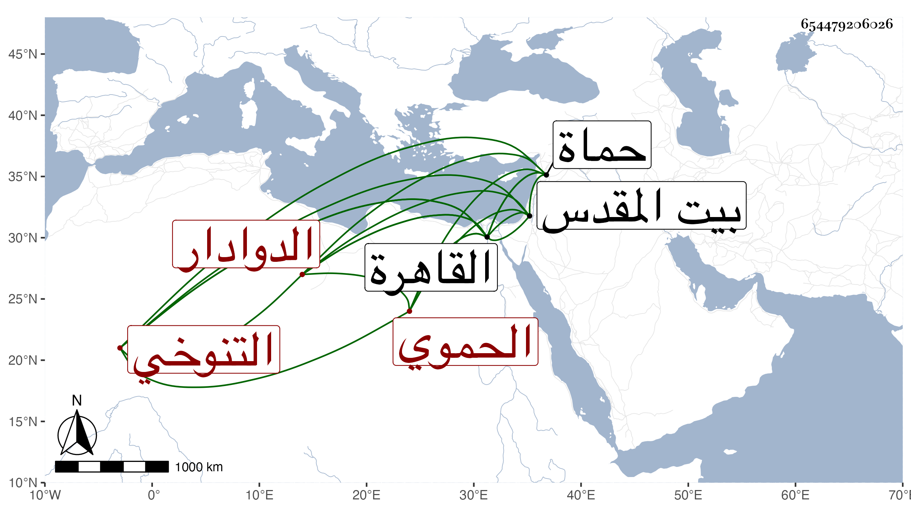

0902Sakhawi.DawLamic.ITO20230111-ara1.EIS1600.654479206026
Biography ID: 654479206026
243
أحمد بن محمد بن أحمد بن عمر بن يوسف بن عبد الله بن عبد الرحمن بن إبراهيم بن محمد بن أبي بكر الشهاب بن الأمير ناصر الدين التنوخي الحموي الدوادار أخو يحيى الآتي ويعرف بابن العطار . ولد في أوائل القرن تقريبا بحماة وقدم مع أبيه القاهرة وتنقل معه في ولايات حتى مات بالقدس وهو ناظره حينئذ فعاد الشهاب إلى القاهرة فأقام بها في ظل صهره الكمال بن البارزي مدة ثم بسفارة الزين عبد الباسط عمل الدوادارية لتمرباي التمربغاوي الدوادار الثاني واستمر فيها إلى أن مات الأشرف فاستقر به الظاهر جقمق بعناية خوند البارزية دوادارا للعزيز فلما تسلطن الظاهر قربه وجعله من جملة الدوادارية وأثرى فلم يلبث أن مات في المحرم سنة خمس وأربعين ، وكان عاقلا حافظا لكثير من الشعر وأخبار الناس مشاركا في فضيلة مع ذكاء وفهم وحسن محاضرة وبراعة في أنواع الفروسية كالرمي بالنشاب علما وعملا ، ولم يخلف في أبناء جنسه مثله .
